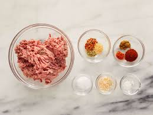
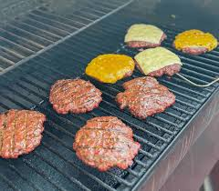
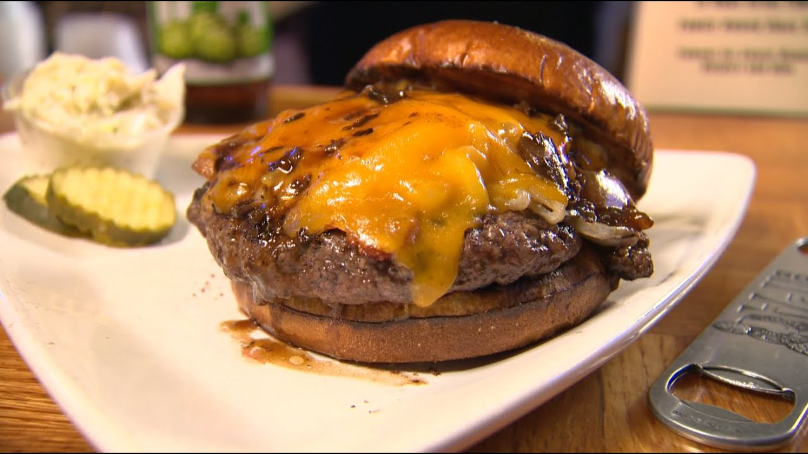

Cheeseburger Recipe
Back to Homepage

Our cheeseburger's are bound to be a favorite, and you might just steal it and claim it as your own.
Cheeseburgers are an American classic that any suburban white dude over 30 knows how to cook almost perfectly. Today you can learn a recipe for yourself and join that club. I know it's just oh so exciting.
The Grand Scheme
- Ground Beef- Known widely as Hamburger, Be sure to drain the fat out from it after you're done cooking it.
- Hamburger Buns- Soft, Bouncy Rolls that is going to hold your patty and toppings of course.
- American Cheese- Heavily processeed sliced cheese, without this it's not a cheeseburger, just a Hamburger, like we mentioned in our Meatloaf recipe.
- Fresh Tomatoes- They don't have to be fresh, but it is preffered. These are great for adding some juice to your burger.
- Lettuce Leaf- You can get a whole head of lettuce at the store, and pull it off of that. Romaine, Green Leaf, or Butter Lettuce go great on burgers.
These are amongst the simplest of recipes to prepare, having a remarkably short list of steps and a fast prep time.
The Breakdown
Of course you can cook your patties on the grill, the stove top, or in the oven but in this recipe we will be doing it on the grill.
- Form your Patties- Mix your Ground Beef and seasonings of choice together in a large bowl, making sure it is all incorporated. Afterwards, shape the meat into as many Big ol' 1/2 inch thick patties as you can.

- Get that Meat Hot- Your meat is now ready to go on the grill, so get that grill nice and full of coal. You're going to place the patties in there and grill them for 8 to 10 minutes on Medium heat, leaving them covered. Maybe 2 minutes before they're done place a slice of cheese on top of each burger and let it get melty.

- Make your burger as you like- After the last step your burgers are ready! All that is left to do is assemble them. Something we like to do as well is toast our buns before making ours, you should try it too.

Ingredients
We have already told you everything you need actually, so get creative with those spices and seasonings!